長期トレンド
JKMとJEPXシステムプライスの推移グラフ
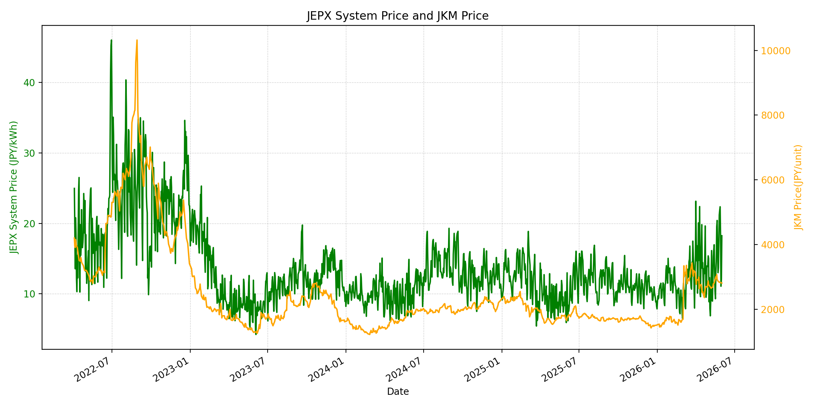
WTIの推移グラフ
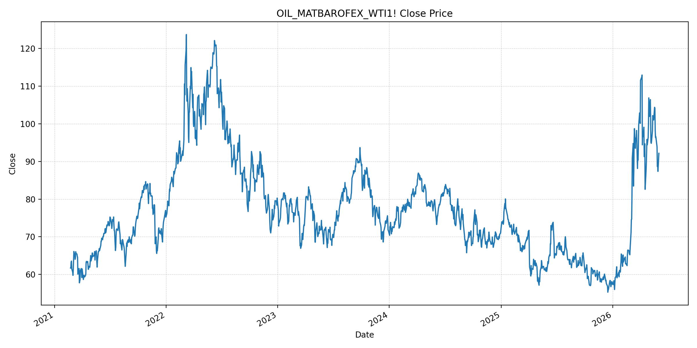
JEPXエリアプライスグラフ（直近一年分）
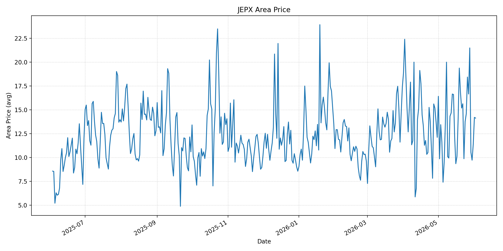
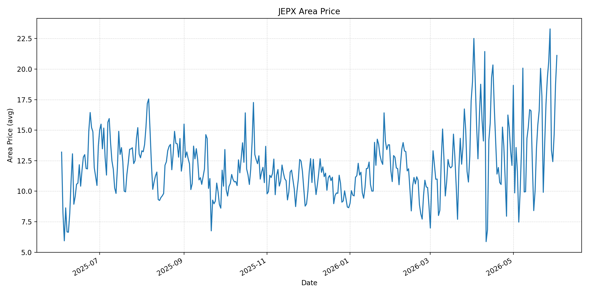
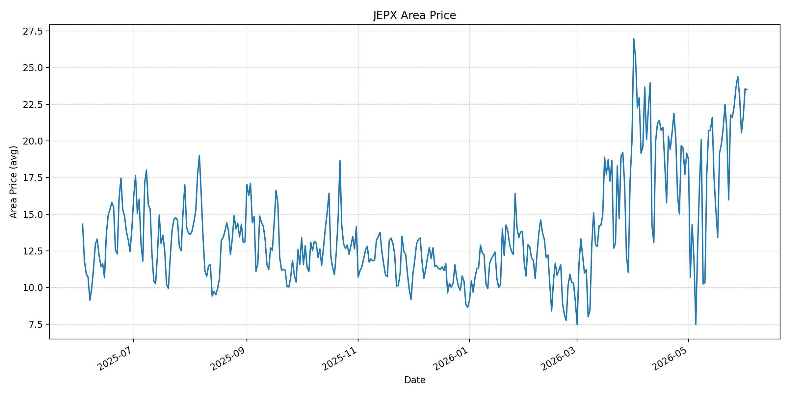
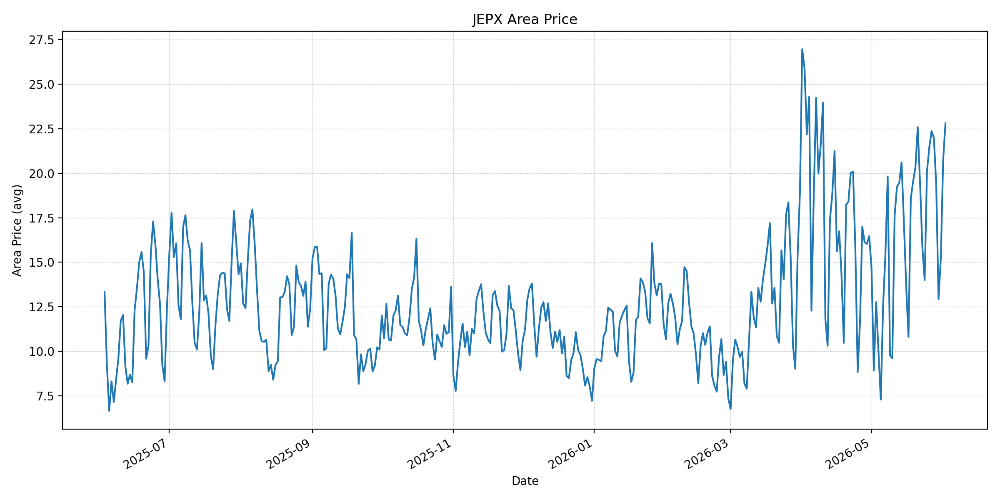
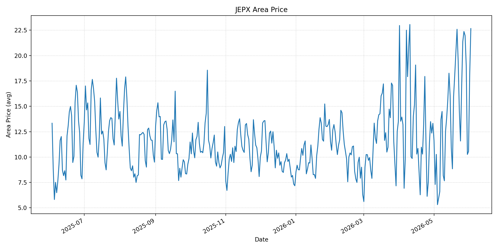
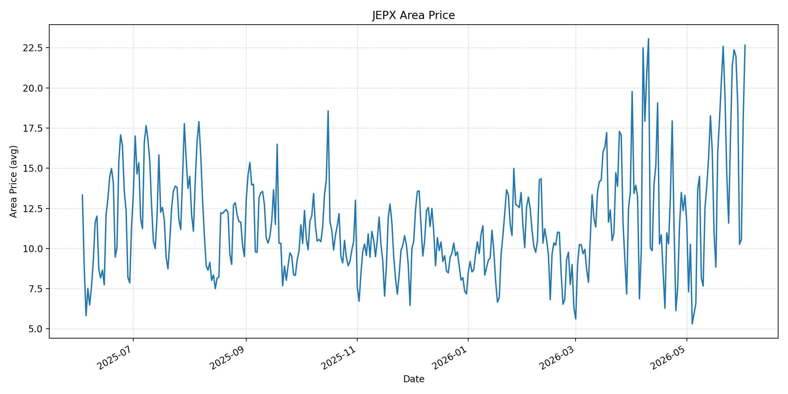
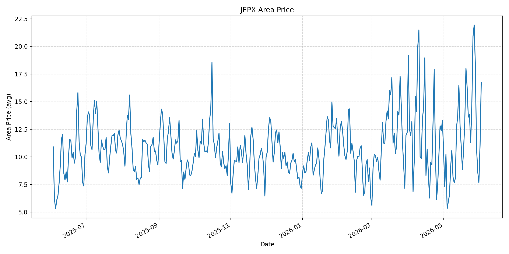
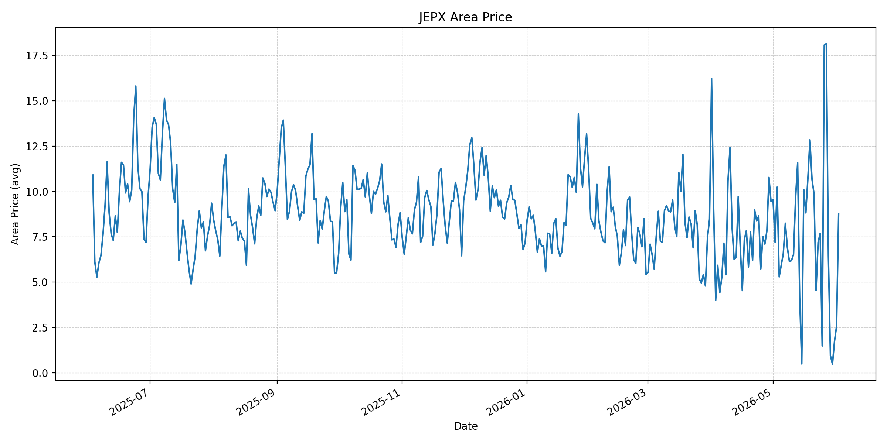
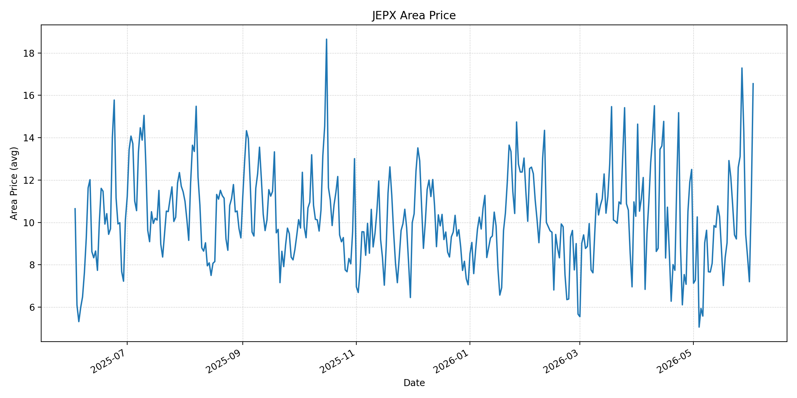
短期トレンド
JKMとJEPXシステムプライスの推移グラフ
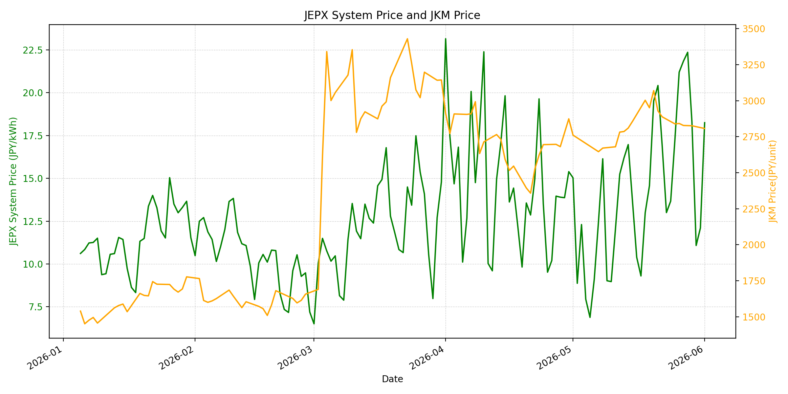
WTIの推移グラフ
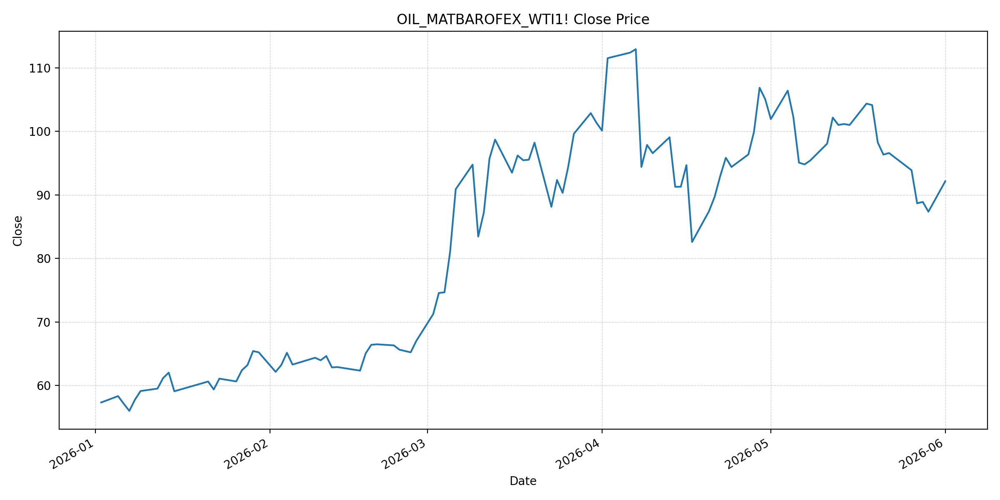
JEPXシステムプライス
JEPXは受渡日ベースの最新非空値で評価しています。最新値は 2026-06-02 分です。先週終値は 2026-05-26 時点の直近値、先月終値は 2026-05-31 時点の直近値で評価しています。
| エリア | 当日価格 | 前日価格 | 前日比（％） | 先週終値 | 先週比（％） | 先月終値 | 先月比（％） | 過去最高値 | 最高値比（％） |
|---|---|---|---|---|---|---|---|---|---|
| システム | 22.08 | 18.25 | 20.99 | 21.20 | 4.15 | 12.10 | 82.48 | 64.06 | -65.53 |
| 北海道 | 14.13 | 14.20 | -0.49 | 18.43 | -23.33 | 11.38 | 24.17 | 73.92 | -80.88 |
| 東北 | 21.12 | 18.69 | 13.00 | 19.25 | 9.71 | 14.64 | 44.26 | 84.92 | -75.13 |
| 東京 | 23.50 | 23.55 | -0.21 | 22.36 | 5.10 | 21.65 | 8.55 | 86.13 | -72.72 |
| 中部 | 22.81 | 20.74 | 9.98 | 21.45 | 6.34 | 15.25 | 49.57 | 52.06 | -56.19 |
| 北陸 | 22.66 | 18.07 | 25.40 | 21.37 | 6.04 | 10.56 | 114.58 | 46.48 | -51.25 |
| 関西 | 22.66 | 18.07 | 25.40 | 21.37 | 6.04 | 10.56 | 114.58 | 46.48 | -51.25 |
| 中国 | 16.74 | 11.08 | 51.08 | 20.90 | -19.90 | 7.66 | 118.54 | 46.48 | -63.99 |
| 四国 | 8.76 | 2.57 | 240.86 | 18.08 | -51.55 | 1.74 | 403.45 | 46.48 | -81.16 |
| 九州 | 16.55 | 11.08 | 49.37 | 13.11 | 26.24 | 7.20 | 129.86 | 40.54 | -59.18 |
LNG先物価格
最新値は 2026-06-01 の LNG(close) です。先週終値は 2026-05-25 時点の直近値、先月終値は 2026-05-29 時点の直近値で評価しています。
| 当日価格 | 前日価格 | 前日比（％） | 先週終値 | 先週比（％） | 先月終値 | 先月比（％） | 過去最高値 | 最高値比（％） |
|---|---|---|---|---|---|---|---|---|
| 2807.00 | 2826.00 | -0.67 | 2839.00 | -1.13 | 2826.00 | -0.67 | 10319.00 | -72.80 |
石油先物価格
最新値は 2026-06-01 の OIL(close) です。先週終値は 2026-05-25 時点の直近値、先月終値は 2026-05-29 時点の直近値で評価しています。
| 当日価格 | 前日価格 | 前日比（％） | 先週終値 | 先週比（％） | 先月終値 | 先月比（％） | 過去最高値 | 最高値比（％） |
|---|---|---|---|---|---|---|---|---|
| 92.16 | 87.36 | 5.49 | 87.36 | 5.49 | 87.36 | 5.49 | 123.70 | -25.50 |
ニュース
イラン情勢に関するニュース
- 2026年6月1日、APは、米国がイランのレーダー・無人機関連施設を攻撃し、イランがクウェート駐留米軍に向けて発射したミサイルを撃墜したと報じました。停戦延長協議が続くなか、軍事的な応酬が再び表面化しています。 参照: AP, 2026-06-01
- 2026年5月29日、APは、トランプ大統領が停戦延長とホルムズ海峡再開を含む合意を進めるかまだ決めていないと報じています。過去24時間では、最終承認を確認できる強い新規報道はありませんでした。 参照: AP, 2026-05-29
ホルムズ海峡経由の石油・LNGに関するニュース
- 2026年6月1日、APは、米イラン停戦への脅威となる新たな戦闘を受けて原油価格が上昇し、ブレントが4.2％高の94.98ドルで終えたと報じました。OIL(close)も 92.16 へ反発しています。 参照: AP, 2026-06-01
- 2026年5月29日、Reutersは、米イランが60日間の停戦延長とホルムズ海峡の通航制限解除で合意に達したものの、トランプ大統領の最終承認待ちだと報じました。通航正常化はまだ実績確認が必要です。 参照: Reuters/Investing.com, 2026-05-29
ホルムズ海峡経由でない石油・LNGに関するニュース
- 過去24時間で、日本向けの非ホルムズ新規大型調達に関する強い追加報道は確認できませんでした。直近では2026年5月27日、S&P GlobalがJERAは豪州Ichthys LNGのストライキリスクを吸収可能と見ていると報じています。 参照: S&P Global, 2026-05-27
- JOGMECの2026年5月LNG月次では、米イラン和平交渉進展への期待でJKMが下落した一方、ホルムズ封鎖継続や豪州Ichthys LNGのストライキ懸念が月後半の上昇要因になったと整理されています。 参照: JOGMEC, 2026年5月LNG月次
日本国内のイラン戦争に関係するニュース
- 過去24時間で、JEPX制度や国内電力市場制度を直接変更する新規の強い発表は確認できませんでした。直近の国内対策として、経済産業省は2026年5月26日に、7月から9月の電気・ガス料金支援と夏季省エネ呼びかけを説明しています。 参照: 経済産業省, 2026-05-26
- 経済産業省は、現時点では原油やLNGの量は確保できており、従来以上に踏み込んだ節約を求める段階ではないと説明しています。国内料金支援は家計負担を抑えますが、JEPX卸価格を直接下げる施策ではありません。 参照: 経済産業省, 2026-05-26
インサイト
ニュース事項による日本の電力市場への影響（短期：数日〜1週間）
- JEPXシステムプライスは 22.08 円/kWhで前日比 20.99%、先月比 82.48% です。米イランの軍事応酬を受けてOILも 92.16 へ前日比 5.49% 反発しており、燃料リスク低下の流れは一時的に止まっています。
- 東京 23.50、中部 22.81、北陸・関西 22.66 と高値圏が広く、四国は 8.76 まで戻しました。数日から1週間は、停戦承認の有無に加え、地域別需給と連系線制約がJEPXの上振れを左右します。
- LNGは 2807.00 と前日比 -0.67%、先週比 -1.13% です。JERAの調達耐性とJKM下落は安心材料ですが、Ichthysの労務リスクやホルムズ正常化の未確認が、短期の燃料心理を支えやすい状態です。
ニュース事項による日本の電力市場への影響（長期：1ヶ月〜半年）
- ホルムズ再開案が実行されれば、OILは過去最高値比 -25.50% の水準から安定しやすくなります。ただし、6月1日のAP報道のように戦闘が再発する限り、海上保険、船腹、通航判断のリスクプレミアムは残ります。
- システム価格は過去最高値比では -65.53% ですが、先月比では大きく上昇しています。燃料費が低下しても、夏季需要と東京・中部・関西圏の高値が重なる場合、卸価格は下がりにくくなります。
- 国内の電気・ガス料金支援は小売負担を抑えますが、卸市場や発電燃料調達コストを直接下げるものではありません。1ヶ月から半年では、ホルムズ合意の履行、豪州LNGの供給安定性、JEPXのエリア差を分けて監視する必要があります。